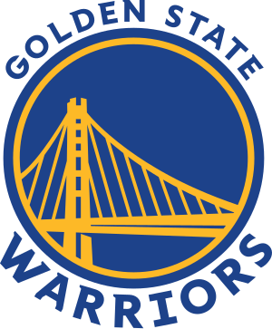

Golden State Warriors

Jerseys
The Golden State Warriors are an American professional basketball team based in San Francisco. The Warriors compete in the National Basketball Association (NBA) as a member of the Pacific Division of the Western Conference. Founded in 1946 in Philadelphia, the Warriors moved to the San Francisco Bay Area in 1962 and took the city's name before changing its geographic moniker to Golden State in 1971. The team plays its home games at Chase Center.
Nicknamed the "Dubs" as a shortening of "W's", the Warriors hold several NBA records: best regular season, most wins in a season (regular season and postseason combined), and best postseason run. Curry and Thompson are generally considered among the greatest backcourts of all time. The Warriors rank third for the most NBA championships and Finals appearances in NBA history, trailing only the Los Angeles Lakers and Boston Celtics. Chamberlain and Curry are the only players in franchise history to win the league MVP award, for a total of three awards.